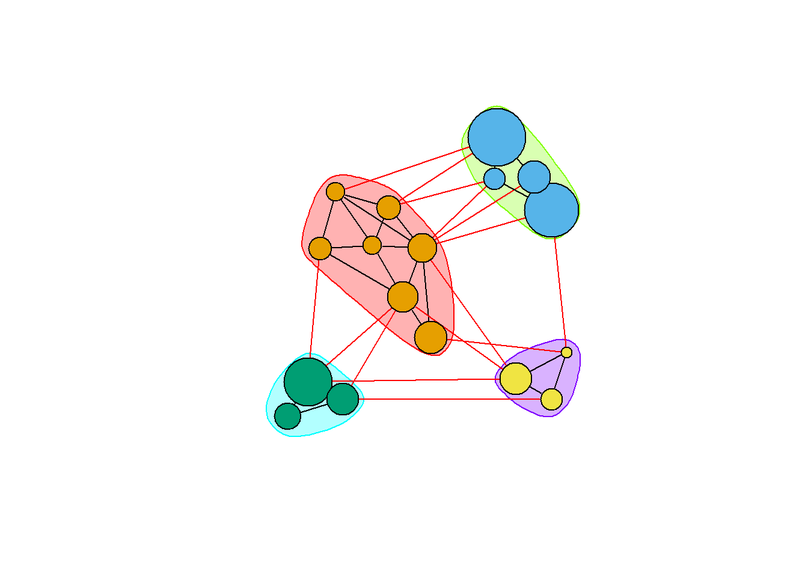

8.2 커뮤니티 발견(Community detection)
다양한 알고리즘이 커뮤니티 탐지를 위해 개발되었다. 커뮤니티 사이는 링크연결이 최소화되고, 커뮤니티 내에는 연결이 조밀하게 많아야 된다.
- Newman-Girvan
- 라벨 전파(Propagating labels)
- Greedy optimization of modularity
- K-core 분해
에지 중개 중심성에 기반한 커뮤니티 발견(Newman-Girvan)
높은 중개 에지 중심성들이 (각 단계마다 다시 계산하여) 순차적으로 제거되고, 가장 좋은 네트워크의 분할이 선택된다 : cluster_edge_betweenness() 함수
ceb <- cluster_edge_betweenness(net) ## Warning in cluster_edge_betweenness(net): At community.c:460 :Membership vector
## will be selected based on the lowest modularity score.## Warning in cluster_edge_betweenness(net): At community.c:467 :Modularity
## calculation with weighted edge betweenness community detection might not make
## sense -- modularity treats edge weights as similarities while edge betwenness
## treats them as distancesdendPlot(ceb, mode="hclust")
plot(ceb, net) 커뮤니티 탐지 igraph 개체를 검토해 보자 : membership() 함수, modularity() 함수 그리고 crossing() 함수
class(ceb)## [1] "communities"length(ceb) # 커뮤니티 수## [1] 5membership(ceb) # 각 노드의 커뮤니티 소속## s01 s02 s03 s04 s05 s06 s07 s08 s09 s10 s11 s12 s13 s14 s15 s16 s17
## 1 2 3 4 1 4 3 3 5 5 4 4 4 4 1 4 4modularity(ceb) # 그래프 분할의 모듈성## [1] 0.292476crossing(ceb, net) # 부울리안 벡터 : 커뮤니티와 교차하는 에지들은 TRUE## s01|s02 s01|s03 s01|s04 s01|s15 s02|s01 s02|s03 s02|s09 s02|s10 s03|s01 s03|s04
## TRUE TRUE TRUE FALSE TRUE TRUE TRUE TRUE TRUE TRUE
## s03|s05 s03|s08 s03|s10 s03|s11 s03|s12 s04|s03 s04|s06 s04|s11 s04|s12 s04|s17
## TRUE FALSE TRUE TRUE TRUE TRUE FALSE FALSE FALSE FALSE
## s05|s01 s05|s02 s05|s09 s05|s15 s06|s16 s06|s17 s07|s03 s07|s08 s07|s10 s07|s14
## FALSE TRUE TRUE FALSE FALSE FALSE FALSE FALSE TRUE TRUE
## s08|s03 s08|s07 s08|s09 s09|s10 s10|s03 s12|s06 s12|s13 s12|s14 s13|s12 s13|s17
## FALSE FALSE TRUE FALSE TRUE FALSE FALSE FALSE FALSE FALSE
## s14|s11 s14|s13 s15|s01 s15|s04 s15|s06 s16|s06 s16|s17 s17|s04
## FALSE FALSE FALSE TRUE TRUE FALSE FALSE FALSE분할의 높은 모듈성(High modularity)은 커뮤니티 내의 강한 연결성(dense connection)과 커뮤니티 간의 약한 연결성(sparse connection)을 반영한다.
전파 라벨(propagating lables)에 기반한 커뮤니티 탐지
노드에 라벨을 할당하고, 랜덤화한 다음, 이웃 사이에 가장 자주 나타나는 각 정점의 라벨로 대체한다 이 절차들은 각 정점이 이웃들과 가장 공통적인 라벨을 가질 때까지 반복 수행된다.
clp <- cluster_label_prop(net)
plot(clp, net)모듈성의 탐욕적 최적화(greedy optimization of modularity)에 기반한 커뮤니티 탐지
cfg <- cluster_fast_greedy(as.undirected(net))
plot(cfg, as.undirected(net))
내장된 plot() 함수에 의존하지 않고도 커뮤니티를 시각화할 수 있다.
V(net)$community <- cfg$membership
colrs <- adjustcolor( c("gray50", "tomato", "gold", "yellowgreen"), alpha=.6)
plot(net, vertex.color=colrs[V(net)$community])
K-코어 분할(K-core decomposition)
k-core는 모든 노드들이 최소한 k의 연결중심성을 갖는 최대의 서브그래프이다. 결과는 네트워크 내에 있는 각 정점들의 coreness이다. 만일 한 노드가 D-코어에 속하지만, (D+1) –코어에 속하지 않는다면, 그 노드의 coreness는 D가 된다.
kc <- coreness(net, mode="all")
plot(net, vertex.size=kc*6, vertex.label=kc, vertex.color=colrs[kc])